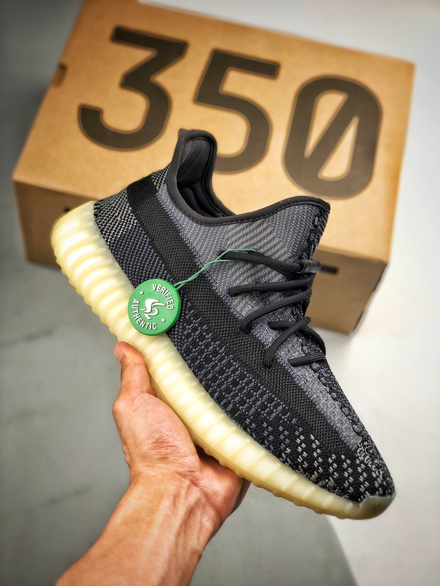

Adidas Yeezy Boost 350 V2 'Carbon' (Asriel) были разработаны в рамках коллаборации Adidas x Yeezy. Релиз модели ожидался в сентябре 2020 года, однако был перенесен на начало октября. Однако это не первое изменение относительно данной модели. 18 сентября стало известно, что модель будет переименована и представлена с новым названием. Канье Уест решил сменить первоначальное библейское название 'Asriel' на более современное - 'Carbon'. Yeezy Boost 350 V2 'Carbon' (Asriel) выполнена в очень красивых темно-синих оттенках, которые очень ждали фанаты бренда. Уникальным отличием модели является полупрозрачная боковая полоска - она выполнена в черном оттенке и проходит вдоль всего кроссовка. Yeezy 350 'Carbon' (Asriel) сочетает в себе верх из традиционной ткани Primeknit и полупрозрачную подошву, выполненную в костяном оттенке, с амортизационным материалом Boost, которая привлечет внимание всех окружающих. Как и другие модели линейки V2, Yeezy Boost 350 'Carbon' (Asriel) оснащены пенной стелькой Ortholite с эффектом памяти. Благодаря уникальной синей расцветки, модель станет одной из самых популярных в 2020 году.
